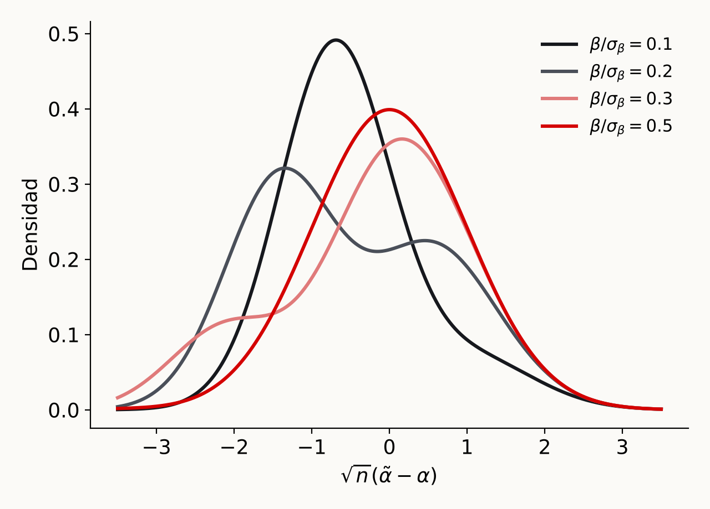

Inferencia
Departamento de Economía — Universidad del Norte
Considere el siguiente modelo
\[ Y=\alpha D+\beta'W+\epsilon \]
\(\alpha\) es el parámetro de interés
\(W\) es un vector de variables de control
¿Cómo elegimos las variables del vector \(W\)?
Pregunta
Si \(\alpha\) es el parámetro de interés ¿Por qué incluir \(W\)?
Una buena variable de control debe cumplir dos condiciones
Omitir una covariable que cumple las dos condiciones invalida la inferencia causal sobre \(\alpha\)
Pregunta
¿Qué pasa si agrego una variable que no es una variable de control?
No satisface relevancia: deteriora la precisión de la estimación
Satifasce relevancia: mejora la precisión de la estimación
Dos objetivos al seleccionar \(W\): condición de exogeneidad, precisión de la estimación. Dos retos a tener en cuenta
Inferencias post-selección
Dimensionalidad
¿Qué es? Un procedimiento en dos etapas (Gaillac y L’Hour 2025, sec. 4.1):
¿Por qué es un problema?

Densidad de \(\sqrt{n}(\tilde\alpha-\alpha)\) en muestra finita con \(n=100\), \(\rho=0.7\) y \(c_n=\sqrt{\log n}\) (Lema 4.2 en Gaillac y L’Hour (2025))
Sabemos que Lasso selecciona variables ¿Podemos usar esta selección para estimar los parámetros vía MCO?
Considere que el modelo
\[ Y=\alpha D+\beta'W+\epsilon \]
Queremos estimar el efecto de \(D\) sobre \(Y\). Suponga que en \(W\) \(p>n\). Considere el siguiente procedimiento
Note que en la regresión del paso 2., las variables que usa son las que Lasso seleccionó. Esto implica
\[ Y=\alpha D + \beta'W+\epsilon \] lo podemos obtener de la siguiente manera. Definimos \(\tilde{Y}=Y-\gamma_{YW}'W\) y \(\tilde{D}=D-\gamma_{DW}'W\). Es decir, la parte de la variable no explicada por \(W\). Hacemos
\[ \tilde{Y}=\alpha \tilde{D}+\epsilon; \quad E[\epsilon\tilde{D}]=0 \]
Teorema (Frisch-Waugh-Lovell)
Suponga que \(Y,D,W\) tienen segundos momentos finitos y que \(D\) no es perfectamente predecible por \(W\). El coeficiente poblacional \(\alpha\) puede ser recuperado de la regresión poblacional de \(\tilde{Y}\) sobre \(\tilde{D}\)
\[ \alpha=\underset{a}{\text{argmin}}E[(\tilde{Y}-a\tilde{D})^2] \]
Paso 1. Regresiones Lasso de \(Y_i\) sobre \(W_i\) y de \(D_i\) sobre \(W_i\) (Chernozhukov et al. 2024, sec. 4.2)
\[ \begin{aligned} \hat\gamma_{YW}&=\arg\min_{\gamma\in\mathbb{R}^p}\sum_i(Y_i-\gamma'W_i)^2+\lambda_1\sum_j\hat\psi_j^Y|\gamma_j|\\ \hat\gamma_{DW}&=\arg\min_{\gamma\in\mathbb{R}^p}\sum_i(D_i-\gamma'W_i)^2+\lambda_2\sum_j\hat\psi_j^D|\gamma_j| \end{aligned} \]
y obtener los residuales \(\check Y_i=Y_i-\hat\gamma_{YW}'W_i\) y \(\check D_i=D_i-\hat\gamma_{DW}'W_i\). En lugar de Lasso puede usarse Post-Lasso u otras variantes
Paso 2. Regresión por MCO de \(\check Y_i\) sobre \(\check D_i\)
\[ \hat\alpha=\arg\min_{a\in\mathbb{R}}\mathbb{E}_n[(\check Y-a\check D)^2]=\big(\mathbb{E}_n[\check D^2]\big)^{-1}\mathbb{E}_n[\check D\check Y] \]
Se usan los resultados estándar de MCO, tratando los residuales como observados. Con \(\hat\epsilon_i=\check Y_i-\hat\alpha\check D_i\), el error estándar robusto es \(\sqrt{\hat V/n}\), con \(\hat V=(\mathbb{E}_n[\check D^2])^{-1}\mathbb{E}_n[\check D^2\hat\epsilon^2](\mathbb{E}_n[\check D^2])^{-1}\)
Dos condiciones para que el estimador funcione bien (Chernozhukov et al. 2024, 108-9)
1. Sparsity aproximada
Los coeficientes ordenados de \(\gamma_{YW}\) y \(\gamma_{DW}\) decaen rápido, con \(a>1\): \[ |\gamma_{YW}|_{(j)}\leq Aj^{-a},\quad |\gamma_{DW}|_{(j)}\leq Aj^{-a} \]
Se busca inferencia a tasa \(\sqrt{n}\) sobre \(\alpha\), no solo buena predicción: los errores de la primera etapa deben ser tan pequeños que su impacto desaparezca en la segunda. La dimensión efectiva \(s\approx A^{1/a}n^{1/2a}\) crece más lento que \(\sqrt{n}\)
2. Elección de \(\lambda_1\) y \(\lambda_2\)
Usar la regla plug-in (elección teórica de \(\lambda\)): garantiza buenas predicciones de \(D\) y \(Y\) sin sobreajuste. Sin esa garantía, la estimación de \(\check D\) y \(\check Y\) puede tener efectos de primer orden sobre \(\hat\alpha\)
Lasso con validación cruzada tiene propiedades teóricas similares, pero en muestras moderadas tiende a sobreajustar. Solución: cross-fitting (DML)
Parámetros de molestia: \(\eta_o=(\gamma_{DW}',\gamma_{YW}')'\). Con \(\tilde Y(\eta)=Y-\eta_1'W\) y \(\tilde D(\eta)=D-\eta_2'W\), \(\alpha(\eta)\) resuelve (Chernozhukov et al. 2024, sec. 4.3)
\[ M(a,\eta)=E\big[(\tilde Y(\eta)-a\tilde D(\eta))\tilde D(\eta)\big]=0 \]
Ortogonalidad de Neyman
\(\alpha\) es Neyman ortogonal respecto a \(\eta\) si \(\partial_\eta\alpha(\eta_o)=0\). Si \(\alpha\) es raíz de \(M(a,\eta)=0\), la ecuación es Neyman ortogonal si \(\partial_\eta M(\alpha,\eta_o)=0\)
¿Por qué doble Lasso soluciona el problema? (Gaillac y L’Hour 2025, Remark 4.6)
La selección se basa en dos ecuaciones: se eligen los controles relacionados con \(D\) y los relacionados con \(Y\)
Así no se omite ningún factor de confusión. El enfoque ingenuo de una sola ecuación descarta los controles con efecto pequeño sobre \(Y\) pero muy correlacionados con \(D\), que son justamente los que generan el sesgo
Como resultado, el estimador de \(\alpha\) tiene distribución aproximadamente normal y son válidas las pruebas de hipótesis y los intervalos de confianza usuales
Econometría con Machine Learning · Uninorte